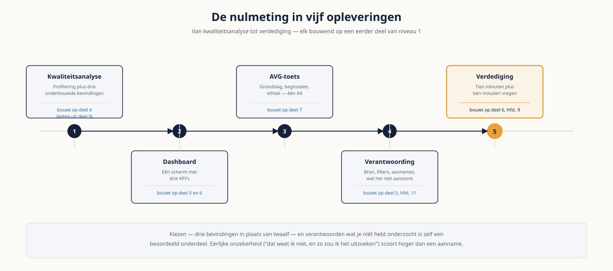

Deel 10 — Capstone — de nulmeting
Niveau 1 — Fundament · Reader
Voorbereiding, geen vervanging
Deze cursusmap is onafhankelijk ontwikkeld door Ductus B.V. Ductus is niet gelieerd aan, geaccrediteerd door of goedgekeurd door DAMA International, IIBA, IAPP, de EDM Association of Microsoft.
Dit materiaal bereidt voor op de genoemde examens en vervangt het officiële examenmateriaal niet. Bodies of knowledge, handboeken en examenblueprints worden hier niet gereproduceerd; deelnemers schaffen die bronnen zelf aan.
Alle genoemde merken zijn eigendom van hun respectieve houders. Examengegevens gecontroleerd in augustus 2026 — verifieer vóór inschrijving bij de bron.
1. Wat de capstone is
Negen delen lang heb je onderdelen geoefend. Hier doe je het één keer helemaal: van een ruwe dataset naar een onderbouwd advies dat je kunt verdedigen. Niet omdat de losse opdrachten te makkelijk waren, maar omdat het samenvoegen zelf de vaardigheid is — en dat is precies wat in de losse opdrachten ontbrak.
De capstone is geen examen. Het is een oplevering die je aan een opdrachtgever zou durven geven, en de verdediging erna lijkt op het gesprek dat daarop volgt. Dat betekent ook dat een eerlijke onzekerheid meer waard is dan een gladde bewering: wie zegt "dit weet ik niet en zo zou ik het uitzoeken", scoort hoger dan wie iets invult.
Wat je aantoont
- Dat je een dataset kunt doorlichten en de bevindingen kunt onderbouwen die ertoe doen.
- Dat je uit die bevindingen iets kunt maken waar een besluitnemer mee kan werken.
- Dat je de juridische en ethische kant meeneemt zonder jurist te zijn.
- Dat je je eigen werk kunt verantwoorden, inclusief wat het níét aantoont.
- Dat je kunt uitleggen en verdedigen wat je hebt gedaan, ook onder kritische vragen.
2. De opdracht
Je krijgt een export uit het dataplatform van Meridiaan: deelnemersgegevens, werkgevers, regelingen, deelnames en premiebetalingen. De opdrachtgever is de CFO, die vier maanden heeft om de DNB-bevinding over de betrouwbaarheid van de rapportageketen te adresseren. Hij vraagt om een nulmeting.
| Deliverable | Omvang | Bouwt op |
|---|---|---|
| 1. Kwaliteitsanalyse | Profileringsuitkomsten plus drie onderbouwde bevindingen | Deel 4, met de keten uit deel 3 |
| 2. Dashboard | Eén scherm met drie KPI's | Deel 5 en 6 |
| 3. AVG-toets | Eén A4 | Deel 7 |
| 4. Verantwoording | Maximaal één A4 | Deel 5, hoofdstuk 11 |
| 5. Verdediging | Tien minuten plus vragen | Deel 6, hoofdstuk 9 |
Wat je vooral niet doet
Alles onderzoeken. De dataset bevat meer bevindingen dan je kunt behandelen, en dat is opzettelijk. Kiezen — en verantwoorden waarom je iets niet hebt behandeld — is een beoordeeld onderdeel. Een capstone met twaalf bevindingen scoort lager dan een met drie die goed zijn onderbouwd.

3. Deliverable 1 — kwaliteitsanalyse
Wat erin hoort
- Een afbakening: welke kritieke data-elementen heb je onderzocht, en waarom juist die? Verwijs naar de vier afbakeningsvragen uit deel 4.
- Profileringsuitkomsten voor die elementen: vulgraad, frequentieverdeling, minimum en maximum, aantal unieke waarden.
- Drie bevindingen, elk volledig geformuleerd met de vijf elementen: welk gegeven, welke dimensie, hoe gemeten, welk gevolg, wie eigenaar.
- Per bevinding een hypothese over de oorzaakcategorie, en hoe je die zou toetsen.
- Eén bevinding uitgewerkt tot een kwaliteitsregel met object, conditie, drempel, ernst en eigenaar.
- Een expliciete lijst van wat je niet hebt onderzocht, met de reden.
Waar het meestal misgaat
- Bevindingen die op meerdere dimensies tegelijk zitten — dat betekent dat de formulering nog niet scherp is.
- Een drempel van honderd procent, of helemaal geen drempel.
- De eigenaar bij IT beleggen. De custodian beheert de opslag; de owner is inhoudelijk verantwoordelijk.
- Alleen naar vulgraad kijken en de frequentieverdelingen overslaan — daar zitten de dummywaarden.
4. Deliverable 2 — dashboard
Wat erin hoort
- Eén scherm, geen scrollen. Drie KPI-tegels met streefwaarde, vergelijking met een vorige periode en trend.
- Maximaal drie ondersteunende visuals, elk met een benoembare handeling.
- Peildatum en bron op het dashboard zelf.
- Je ene zin, apart aangeleverd: de kernboodschap in één zin waar iemand het mee oneens kan zijn.
- Een correct semantisch model — controleer de relaties vóór je bouwt.
Kies je KPI's zo dat ze de DNB-bevinding raken. Een dashboard dat technisch mooi is en niets zegt over de betrouwbaarheid van de rapportageketen, beantwoordt de vraag van de opdrachtgever niet — en dat is een zwaarder gebrek dan een lelijke tegel.
De toets die je zelf uitvoert
Laat iemand vijf seconden naar je dashboard kijken en vraag wat hij zag. Komt dat niet overeen met je ene zin, dan is het ontwerp niet af. Doe deze toets vóór de oplevering, niet erna.
5. Deliverable 3 — AVG-toets
Eén A4, geen juridisch document. Het doel is aantonen dat je de vragen kent en weet wanneer je moet escaleren.
- Welke persoonsgegevens zitten in de dataset die je hebt gekregen, en zitten er bijzondere categorieën bij?
- Wat is het doel van jouw verwerking, en past dat binnen het doel waarvoor de gegevens oorspronkelijk zijn verzameld?
- Welke grondslag zou van toepassing zijn, en waarom niet de andere?
- Loop de zes beginselen langs en noteer per beginsel wat je weet, vermoedt of niet weet.
- Beoordeel of je met deze dataset had mogen werken zoals je het deed, en wat je anders had moeten regelen.
- Pas de vier ethische vragen toe op je dashboard: zou een deelnemer verbaasd zijn?
- Formuleer één concrete vraag aan de functionaris gegevensbescherming.
"Dit weet ik niet" is bij minstens twee beginselen het juiste antwoord. Opschrijven dat je het niet weet en aangeven aan wie je het zou vragen, telt zwaarder dan een aanname die goed klinkt.
6. Deliverable 4 — verantwoording
Maximaal één A4, met de vijf onderdelen uit deel 5.
- De vraag zoals jij hem hebt begrepen, en het besluit waarvoor hij dient.
- De bron, de peildatum en het moment van ophalen.
- De filters die je hebt toegepast, met per filter hoeveel rijen afvielen.
- De aannames die je hebt moeten doen.
- Wat je analyse níét aantoont — concreet, niet algemeen.
Voeg hier één ketenschets aan toe: waar komen de gegevens vandaan, welke stappen zijn er onderweg genomen, en welke schakel ken je niet? Vraagtekens zijn hier een pluspunt, geen gebrek — ze laten zien dat je de keten hebt onderzocht in plaats van aangenomen.
7. De verdediging
Tien minuten presentatie, tien minuten vragen. Het panel bestaat uit je docent en twee medecursisten, en het is opzettelijk kritisch.
Opbouw van je tien minuten
- Situatie: waar staat Meridiaan, in twee zinnen.
- Complicatie: wat blijkt er niet te kloppen.
- Vraag: wat moet er nu besloten worden.
- Antwoord: wat stel je voor, op grond waarvan.
- Grenzen: wat je niet hebt onderzocht en wat je analyse niet aantoont.
Vragen waarop je je voorbereidt
- "Waar komt dit getal vandaan?" — de metadatavraag uit deel 3.
- "Waarom deze drempel en niet een andere?" — de onderbouwing uit deel 4.
- "Wat als ik het niet met je definitie eens ben?" — de governancevraag uit deel 7 en 16.
- "Wat heb je níét onderzocht, en waarom niet?" — de afbakeningsvraag.
- "Wat zou dit kosten, en wat levert het op?" — het kostenbeeld uit deel 4.
Het gedrag dat het hoogst scoort
Op een vraag die je niet kunt beantwoorden is "dat weet ik niet, en zo zou ik het uitzoeken" het beste antwoord dat er is. Een verzonnen antwoord kost je meer punten dan de vraag waard was — en in het echte gesprek met een opdrachtgever kost het je meer dan dat.
8. Hoe je wordt beoordeeld
De rubric is vooraf bekend, zodat je weet waar je aan toe bent. Per onderdeel gelden drie niveaus.
| Onderdeel | Voldoende | Goed | Uitmuntend |
|---|---|---|---|
| Kwaliteitsanalyse | Drie bevindingen met dimensie en meting | Plus oorzaakhypothese en toetsmethode per bevinding | Plus een expliciete afbakening van wat níét is onderzocht, met reden |
| Dashboard | Drie KPI's met streefwaarde en vergelijking | Plus peildatum, bron en een correct model | Plus KPI's die de DNB-bevinding rechtstreeks raken |
| AVG-toets | Grondslag en beginselen langsgelopen | Plus eerlijke onzekerheid en een vraag aan de FG | Plus de ethische toets op het eigen dashboard |
| Verantwoording | Vijf onderdelen aanwezig | Plus rijenaantallen per filter | Plus een ketenschets met vraagtekens |
| Verdediging | Structuur helder, tijd gehaald | Plus kritische vragen inhoudelijk beantwoord | Plus onzekerheid benoemd zonder de boodschap te verzwakken |
Je hoeft niet overal uitmuntend te scoren. Voldoende op alle vijf onderdelen betekent dat je klaar bent voor niveau 2. Onvoldoende op één onderdeel betekent dat je dat onderdeel opnieuw levert, niet de hele capstone.
9. Vijf fouten die capstones verzwakken
- Te veel bevindingen. Drie goed onderbouwde bevindingen verslaan twaalf oppervlakkige.
- Een dashboard bouwen vóór de ene zin op papier staat.
- De AVG-toets invullen met aannames in plaats van met eerlijke onzekerheid.
- De verantwoording overslaan omdat het geen zichtbaar product is. Het is het onderdeel waar een opdrachtgever over een half jaar op terugkomt.
- In de verdediging een antwoord verzinnen op een vraag die je niet kunt beantwoorden.
10. Na de capstone
Het examenbesluit
De capstone sluit af met een go of no-go voor het CDMP-examen, op grond van je proefexamenscores uit deel 9. Twee consistente scores boven de 65 procent is een go. Eén score van 62 is dat niet — dat is geen marge maar geluk.
En dan
- Bij een go: kies een datum binnen zes weken. Langer wachten betekent dat de stof wegzakt.
- Bij een no-go: gebruik je scoreanalyse uit deel 9 voor een gericht plan van vier tot acht weken, met een concrete hertoetsdatum.
- Bewaar je capstone. Bij niveau 2 komt hij terug: de capstone van deel 21 bouwt op dezelfde casus, en het portfoliostuk dat je daar maakt telt mee voor de ervaringsbeoordeling bij Master.
- Wie boven de 70 procent scoorde, kan alvast de eisen voor Practitioner bekijken. Dat vraagt twee specialistexamens en ervaring — de inhoud daarvan is niveau 2.
Studiemateriaal bij dit deel
Er komt in dit deel geen nieuwe stof bij. Alle benodigde kaders staan in de readers van deel 1 tot en met 9.
Kernbron voor het examen blijft de DAMA-DMBOK2 Revised Edition, in papier óf digitaal.
Examenopzet, kosten en inschrijving: cdmp.info/exams en dama.org/certification.
Dit materiaal reproduceert geen van deze bronnen en vervangt ze niet.